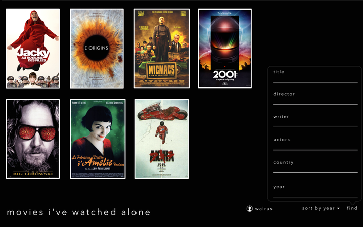

Wisps
Right now I am part of a small team working on a game called Wisps. This is the logo I made for it. The game is about these wisps, tiny spirits, creating a new universe out of nothing. We are writing it in C # using XNA, and maybe it will appear here when it's completed.
Project Desk
This mac application sits in the menu bar and allows you to select any folder on your mac and use it as the current desktop. I use it for quickly switching between different projects Im working on, something I do many times daily.
Sofa Control
A web interface I made for the controlling lights and electronics connected through Nexa switches. Touching the tiles turns the device on or off and you can drag over the yellow tiles to adjust any dimmable lights.

Lightcycle Game
A school assignment that turned out pretty well. It's a windows phone port of the lightcycle game featured in the movie Tron.
The gameplay is similar to a multiplayer version of snake, where you want to force the other player to collide with the wall left after your bike, where you want to force the other player to collide with a wall left after.

Movies I've Watched Alone.
A work-in-progess website where you can add, list and share reviews on movies, but only movies that you've watched alone.

SA Magic
A website that was used for the Magic the Gathering club SA Magic. It was primarily used for reporting match results and rating the players in the yearly league. I did both the backend programming for the ratings calculation and designed and wrote the front end. Unfortunately the league is no longer active. :)

Advanced transport booking system
As a school assignment for Borås University me and a smaller group of developers created a transport planing system for one of the largest companies in IT. The assignment included many challenging parts, including creating an easy to use GUI for booking large transports and calculating the estimated prices for the the inputed specifics. The project included working closely with an external stakeholder using agile development methods and doing real requirements analysis.
I also worked as the project leader for the development team; a valuable lesson in leadership. In the end the product was delivered to a pleased customer on budget and with all requirements for the product fulfilled.
Lost Planets
A digitalized version of the popular german card game 'Lost Cities'. I did all the artwork for the game and was one half of the two half development team. The game includes advanced features such as network multiplayer and a strong AI opponent. This game was made in Java and works on both Windows and Mac OS X.